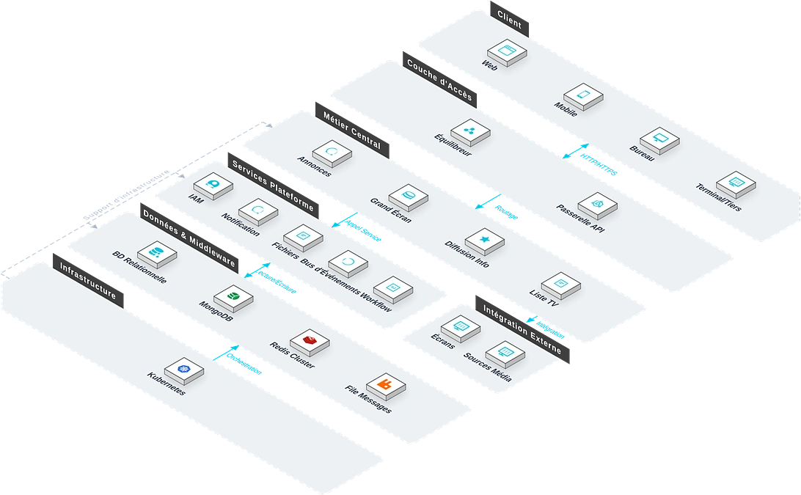

Le Système d'Affichage d'Information offre publication unifiée, gestion à plusieurs niveaux et recherche pratique pour les notifications internes, politiques et annonces. Face aux canaux d'information dispersés et à la difficulté d'atteindre précisément, le système supporte la classification multi-niveaux, la publication, la gestion des annonces, les statistiques de lecture et l'affichage multi-terminaux, aidant à améliorer la transparence et à garantir la réception en temps voulu.

Caractéristiques Clés
Le système couvre publication, gestion d'annonces, catégories multi-niveaux, recherche, statistiques de lecture et multi-terminaux.
Publication
Édition riche, pièces jointes multimédias et tags de catégorie, avec publication en un clic vers portail PC, APP, écrans après validation.
Gestion Annonces
Gestion cycle complet : rédaction, validation, publication et retrait.
Catégories Multi-Niveaux
Catégories flexibles basées sur la structure organisationnelle, avec permissions à plusieurs niveaux.
Recherche
Recherche plein texte et filtrage avancé multi-dimensionnel.
Statistiques Lecture
Suivi temps réel des lecteurs, durée et couverture, avec rappels IM pour les non-lus.
Multi-Terminaux
Architecture de diffusion distribuée vers portail PC, APP mobile, écrans d'accueil et écrans tactiles.
Architecture du Système
Architecture du Système

Architecture orchestration multimédia + diffusion distribuée : six sources de contenu (texte, image, vidéo, web, données métier, API météo) agrégées dans une bibliothèque unique. La couche moteur de diffusion indépendante couvre quatre moteurs (programmation, dispatching planifié, insertion d'urgence, distribution par zone). L'insertion d'urgence utilise SignalR pour overrider tous les terminaux à la priorité maximale.
Scénarios d'Application
Adapté à la publication de notifications internes, à la gestion de catégories multi-niveaux, aux statistiques de lecture et à l'affichage multi-terminaux synchronisé.

Publication Interne
Édition riche et multimédias, publication en un clic vers portail PC, APP, écrans après validation.

Catégories Multi-Niveaux
Catégories flexibles basées sur la structure organisationnelle, permissions strictes.

Statistiques Lecture
Suivi temps réel des lecteurs, durée et couverture, avec rappels IM pour les non-lus.

Affichage Synchronisé
Architecture de diffusion distribuée vers portail PC, APP mobile, écrans d'accueil et écrans tactiles.
Avantages et garantie
Programmation de contenu multimédia
Prend en charge la programmation unifiée de six types de sources de contenu : texte, image, vidéo, page web, données métier, API météo, pour une présentation de l’information riche et variée.
Architecture de diffusion et de contrôle distribuée
Basée sur une architecture de diffusion et de contrôle distribuée, le contenu est poussé de manière synchronisée vers plusieurs terminaux, avec un effet d’affichage uniforme et une gestion centralisée efficace.
Capacité de diffusion d’urgence
Le service de diffusion d’urgence de plus haute priorité permet de remplacer en un clic le contenu en cours de lecture sur tous les terminaux, pour une communication instantanée des notifications d’urgence.
Intégration d’outils de messagerie instantanée
Prend en charge l’intégration avec des outils de messagerie instantanée tels que WeChat Work, DingTalk, Feishu, etc., pour une diffusion de l’information plus rapide et une boucle fermée de notification plus complète.
Conformité pour la publication d’informations administratives
Prend en charge les scénarios de publication d’informations administratives, répondant aux exigences de conformité de la publication d’informations gouvernementales, et l’architecture des colonnes peut être configurée de manière flexible.
Programmation planifiée
Prend en charge la publication planifiée, le retrait automatique et la diffusion périodique des programmes, pour une exploitation automatisée du contenu et une réduction de l’intervention manuelle.
Étude des besoins
Nous étudions en profondeur le processus de publication d’informations de l’entreprise et l’architecture des colonnes, et structurons les types de sources de contenu et la distribution des terminaux.
Déploiement du système
Prend en charge le déploiement local et le déploiement sur cloud, s’adaptant aux besoins de gestion de l’information d’entreprises de différentes tailles et aux environnements réseau.
Formation et mise en ligne
Nous proposons une formation différenciée pour les administrateurs, les rédacteurs et les utilisateurs finaux, couvrant la programmation de contenu, la publication de programmes, la diffusion d’urgence et les opérations courantes.
Maintenance continue
Support technique distant 7j/7 et 24h/24, inspections régulières du système et itérations fonctionnelles, garantie continue de la stabilité de la diffusion et du contrôle.
Sécurité des données
Stockage et transmission chiffrés des données de contenu, gestion des autorisations par niveaux, enregistrement complet des journaux d’opérations, prenant en charge l’audit conforme.
Mise à niveau et extension
Prend en charge l’intégration flexible de nouveaux types de sources de contenu et de nouvelles marques de terminaux, étendant la couverture de la publication d’informations selon les besoins de l’entreprise.